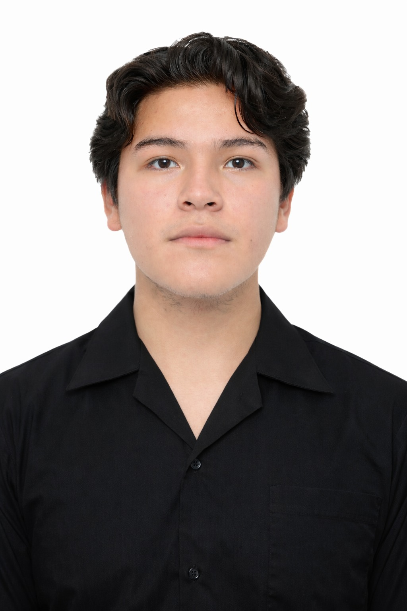

Formación en diseño mecánico, análisis dinámico, programación en C++ y sistemas eléctricos industriales.
Estudiante de Ingeniería Mecatrónica con base en modelado de piezas y planos técnicos, análisis de vibraciones y ecuaciones diferenciales aplicadas a mecanismos, así como conocimientos en circuitos DC/AC y motores trifásicos.
Autodesk Inventor
AutoCAD
C++ (iteraciones y subprogramas)
Dinámica y vibraciones
Ecuaciones diferenciales
Circuitos DC/AC
Motores trifásicos
Email: ricaltrick@gmail.com